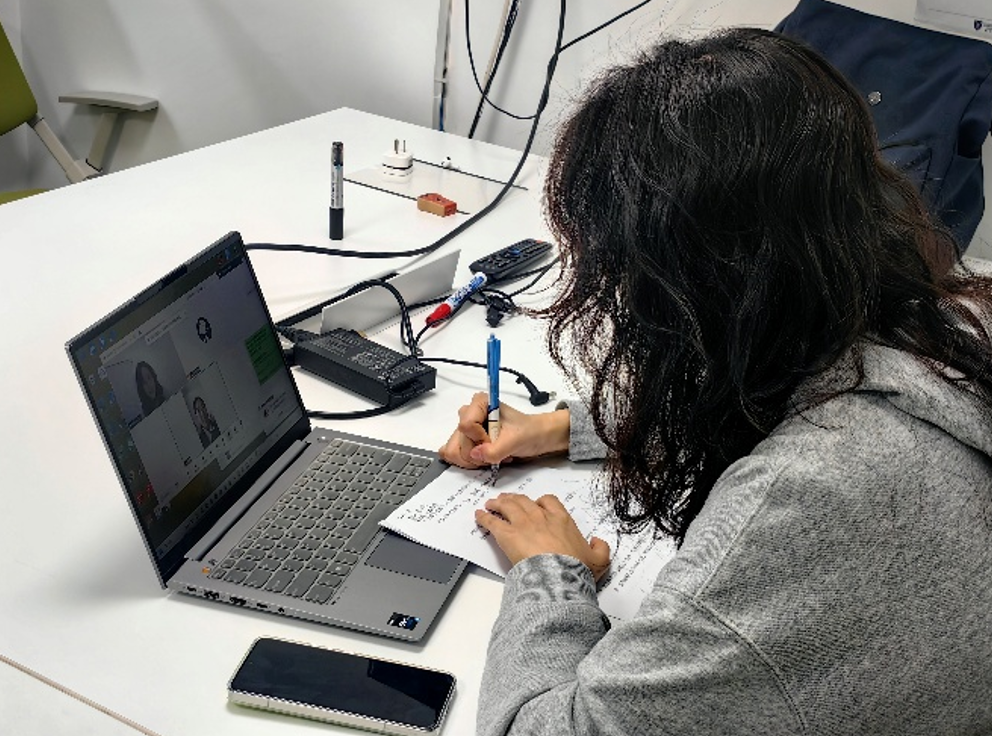
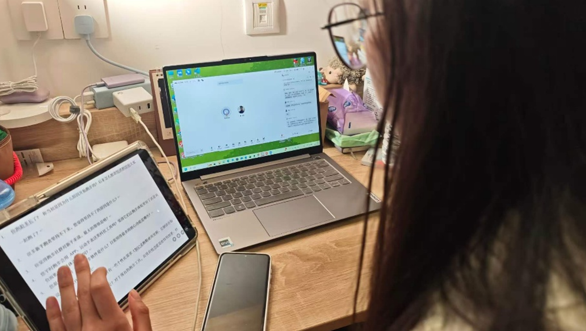
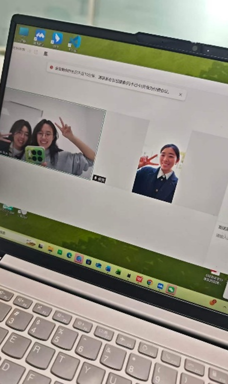
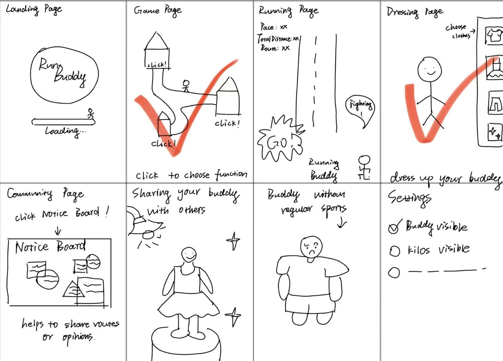

We chose the "Active Lifestyles" direction because we've witnessed too many beginners being deterred from running—due to boredom, loneliness, and lack of positive feedback. Existing apps overemphasize competitive data while neglecting emotional support and habit formation for beginners.
RunBuddy creates a cartoon running companion that transforms running from a "task" to an "anticipation" through companionship mechanisms, lightweight gamification, and safe running volume recommendations. We integrate narrative growth, costume collection, and local route unlocking into the product, responding to the concept of inclusive sports. This design directly addresses real pain points: beginners need encouragement, not pressure. Based on Self-Determination Theory (SDT), RunBuddy enhances autonomy, competence, and relational connection to help users establish sustainable active lifestyles.
The Gap · Four academic papers & four commercial products (each: 3 done well · 3 missed)
📄 Run Together (Şahin & Şener) ✅ Strengths: Mixed methods/Social motivation/SDT analysis ❌ Gaps: Lack of offline scenarios / Insufficient core gamification
📄 Just a Fad? Gamification (2014) ✅ Strengths: COM-B model/In-depth narrative advocacy ❌ Gaps: Outdated cases/No runner-specific validation
📄 Persuasive Technology (Fritz et al.) ✅ Strengths: Long-term tracking/"Data contract" concept ❌ Gaps: Superficial social gamification analysis / No systematic solutions
📄 Smartphone games & BCTs ✅ Strengths: BCTs mapping / mySugr case study ❌ Gaps: Lack of outdoor group scenarios
🏅 Sigma (Joyrun competitor) ✅ Ad-free/Beijing Sport University AI guidance/Campus social features ❌ Lack of advanced training/Underdeveloped community/GPS drift
🏅 Joyrun ✅ Active running groups/Online events/3D track ❌ Excessive ads/Location errors/Heart rate lag
🏅 Keep ✅ Structured courses/Hardware ecosystem/IP medals ❌ Data retention only 30 days/AI coach offline/Weak check-in incentives
🏅 Huawei Health ✅ High market share/Accurate health monitoring/Multi-device sync ❌ Poor cross-brand experience/Cluttered UI/Redundant features
🎯 Key Findings： Existing products generally lack "deep gamification narrative", neglect emotional companionship for beginners and safe running volume guidance; social functions focus on competition rather than lightweight encouragement. RunBuddy will fill the gap of "companionship + moderate rewards + localized routes + injury prevention mechanisms".
The Stakeholders · Primary & secondary users (personas)
🌟 Emily · Beginner (Primary User)
21 years old, XJTLU student who wants to lose weight and relieve stress through running but has never persisted. Owns an Apple Watch but is intimidated by professional data. Likes cute things and costume collection.
Goals： Form habits with low threshold, gain companionship and positive feedback, avoid sports injuries. Needs： Minimalist interface, real-time encouragement from cartoon companion, calories exchanged for costumes, safe route prompts, non-competitive data display.
🏃 Mike · Senior Organizer (Secondary User)
33 years old, manager of a Suzhou running group (600 members), uses Garmin watch and is annoyed by Joyrun ads. Hopes to efficiently manage the community and help beginners integrate.
Goals： Professional data tracking + group event functions, create inclusive challenges, share experience ad-free. Needs： Event management tools, team challenges, professional device compatibility, bulletin board light social features.
Product Impact: Emily drives cute companionship and simple guidance; Mike drives community events and professional compatibility, forming a mutually supportive ecosystem.
User Requirements
User journey map · Pain points of target users
User journey map
📍 ① Having the idea to run → 😣 Fear of loneliness / Not knowing how to start
📍 ② Opening the App → 😫 Complex data / Competitive pressure
📍 ③ During running → 😐 Boredom / Difficulty persisting
📍 ④ After finishing → 😕 Lack of positive feedback / Easy to give up
🎯 RunBuddy Intervention： 🎮 Companion support + 🎁 Collection surprises + 📢 Community encouragement + 🛡️ Safe running volume reminders
Requirements list · Three must-haves for a “playful” system
1. Real-time Companion Motivation System — Virtual companion provides voice/text encouragement during running, rewards stars and interactive easter eggs for each kilometer completed, eliminating loneliness.
2. Gamified Costumes & Growth — Exchange calories burned through safe running for tokens to unlock companion costumes, accessories and local route maps, visualizing exercise achievements.
3. Lightweight Community Bulletin Board + Beginner-friendly Challenges — Users can post updates, like and comment; support team check-in challenges (low-intensity format), with experienced runners guiding beginners to form a supportive atmosphere.
Evidence of life · 5 photos



Ideation & Alternatives
Crazy Eights · 8 rapid hand-drawn UI sketches

1
2
3
4
Design alternatives · Compare 2–3 system directions & final choice
Option A: Pure Data Competitive Emphasizes pace/rankings, similar to traditional sports apps. ❌ Disadvantages: High pressure for beginners, lack of emotional stickiness.
Option B: Hardcore Gamified RPG Complex quests, monster battles and leveling up, deviating from the essence of running. ❌ Disadvantages: High learning cost, deviation from sports safety.
✅ Option C: Companion-based Collection + Light Narrative (RunBuddy) ✔️ Virtual companion support + safe running volume exchange for costumes + unlock real routes + bulletin board social features. ✔️ Integrates "deep gamification" theory with injury prevention mechanisms to protect beginners.
Reasons for Selection： Directly addresses the lack of "deep narrative gamification" in literature, combines Sigma's campus advantages with Joyrun's route fun, fills the frustration caused by excessive competition, and makes running sustainable.
Low-fi prototype · Clickable Figma (add your share link)
📱 RunBuddy Low-Fi Prototype Structure
Home Screen: Companion status + Today's mileage; Bottom Navigation: Running/Costumes/Map/Bulletin Board.
Core Flow: Companion pops up encouragement during running, earns "Bean Coins" after finishing, exchange costumes in shop, unlock new routes. 🎧 [Simulated Interface] : 🐶 "Emily, you've jogged for 15 minutes! Collected 3 coins～ You can change the bear's hat after finishing!"
Paste your Figma URL in the main low-fi link above when ready.
Technical Implementation
System architecture
Web app data flow: client (browser) ↔ API ↔ database & third-party services (maps, health sync). Replace this box with your diagram image.
Stack notes: Frontend React + Node.js + MongoDB; Apple HealthKit / Garmin sync; Amap API for local routes; safe running volume reminders.
Evaluation & Reflection
Usability testing (alpha, 3 participants)
Beginners: companion makes running feel less lonely. Running-group managers: bulletin board direction resonates. Add task times, severity, and quotes from sessions.
Iterative refinement
Increased in-run encouragement frequency; simplified costume shop hierarchy; added “Safe Running Volume Guardian”; reduced rewards when volume is excessive.
Before (screenshot)
After (screenshot)
Final reflection
Social / ethical: Privacy, inclusive language, avoiding shame or toxic competition.
AI in the project: Used for draft encouragement copy and analysis assistance; human review for tone and safety; no sensitive health data in third-party prompts.